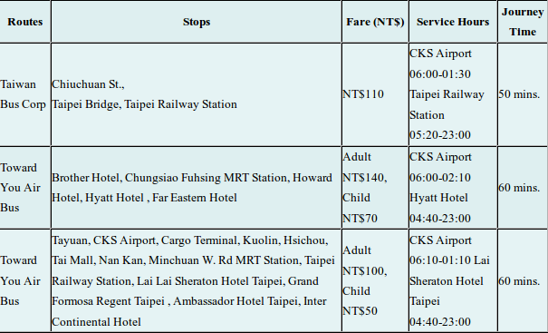

About Taiwan
Location
Taiwan's total land area is about 36,000 square kilometers (14,400 square miles). It is shaped like a leaf that is narrow at both ends. It lies off the southeastern coast of mainland Asia, across the Taiwan Strait from China-- an island on the western edge of the Pacific Ocean. To the north is Japan; to the south is the Philippines. Many airlines fly to Taiwan, making it the perfect travel destination.

Taiwan lies on the western edge of the Pacific "rim of fire," and continuous tectonic movements have created majestic peaks, rolling hills and plains, basins, coastlines, and other natural landscapes. Taiwan's tropical, sub-tropical, and temperate climates provide clear differentiation between the different seasons. There are about 18,400 species of wildlife on the island, with more than 20% being rare or endangered species. Among these are the land-locked salmon, Taiwan serow, Formosan rock monkey, Formosan black bear, blue magpie, Mikado pheasant, and Xueshan grass lizard.
The Taiwan government has established 8 national parks and 13 national scenic areas to preserve Taiwan's best natural ecological environment and cultural sites. There are various ways to discover the beauty of Taiwan. For example, trekking in the magnificence of the cliffs at Taroko Gorge; taking a ride on the Alishan Forest Railway and experiencing the breathtaking sunrise and sea of clouds; hiking up to the summit of Northeast Asia's highest peak, Yu Mountain (Yushan). You can also soak up the sun in Kending (Kenting), Asia's version of Hawaii; stand at the edge of Sun Moon Lake; wander through the East Rift Valley; or visit the offshore islands of Kinmen and Penghu. It's fun in capital letters as well as an awesome journey of natural discovery!
Language
The official language of Taiwan is Mandarin Chinese; but because many Taiwanese are of southern Fujianese descent, Minnan (the Southern Min dialect or Heluo) is also widely spoken. The smaller groups of Hakka people and indigenous tribes have also preserved their own languages. Many elderly people can also speak some Japanese, as they were subjected to Japanese education before Taiwan was returned to Chinese rule in 1945 after the Japanese occupation, which lasted for half a century.
The most popular foreign language in Taiwan is English, which is part of the regular school curriculum. However, for your own convenience, when taking a taxi in Taiwan, it is advisable to prepare a note with your destination written in Chinese to show the taxi driver.
Climate
If you are from a high-latitude country, you can leave your winter coat behind when coming to Taiwan and enjoy the pleasant warmth of the sun. If you'd rather experience the carefree sensation of healthy beads of sweat running down your forehead, then you should visit the beach at Kending (Kenting) in southern Taiwan, where it is summer all year round. Don't worry too much about getting burned by the dazzling sun, so long as you take prudent precautions; the sun may not be as stinging hot as it seems. Furthermore, the country is surrounded by the ocean; and the ocean breezes, which are the reasons for Taiwan's humid weather, will surely make you completely forget the dry cold back home.
Natural Environment

Portuguese called Taiwan when they
came here in the 16th century and saw
the verdant beauty of the island.
Located off the southeast coast of the Asian Continent at the western edge of the Pacific Ocean, between Japan and the Philippines and right in the center of the East-Asian island arc, Taiwan forms a vital line of communication in the Asia-Pacific region.
It covers an area of approximately 36,000 square kilometers (14,400 square miles) and is longer than it is wide. Two-thirds of the total area is covered by forested mountains and the remaining area consists of hilly country, platforms and highlands, coastal plains and basins. The Central Mountain Range stretches along the entire country from north to south, thus forming a natural line of demarcation for rivers on the eastern and western sides of the island. On the west side, lies the Yushan (Yu Mountain) Range with its main peak reaching 3,952 meters, the highest mountain peak in Northeast Asia.
Accommodation & Travel
Accommodation
The following hotels are recommended and will offer special rates for GCCCE2015 participants. We friendly inform that you’d better print and show the Chinese address of your accommodation to the taxi driver if you come from overseas.
The Howard Civil Service International House (Conference Venue)
No. 30,Sec. 3,Shin-Sheng South Road. Taipei, 106, Taiwan, R.O.C.
(Chinese Address) 福華國際文教會館: 台北市新生南路3段30號
Website：http://intl-house.howard-hotels.com/CT_AsiaPacific2.php
Tel No.: 886-2-7712-2323
Fax No.: 886-2-7712-2333


Li Yuan Hotel
It is about 15-minute walk from the Li Yuan Hotel to the conference venue.
Online Reservation: http://www.liyuan.tw/check_en.php
No.98, Sec. 3, Roosevelt Rd., Taipei, 100, Taiwan (MRT Station Xindian Line, Exit no. 4)
(Chinese address) 儷園飯店：100台北市中正區 羅斯福路三段98號
Website：http://www.liyuan.tw/about_en.php
Tel No.: 886-2-2365-7367
Fax No.: 886-2-2368-1500


Yo Xing Regency
It is an approximate 5-minute drive from the Yo Xing Regency to the conference venue.
No.11, Sec.1, Ho-ping West Rd.,Taipei, R.O.C
(Chinese address) 友星大飯店：台北市和平西路一段11號
Website：http://yoxing.ffh.com.tw/assets_English/index.html
Tel No.: 886-2-2394-3121
Fax No.: 886-2-2396-7791


Travel
From Taiwan Taoyuan International Airport to Howard Civil Service International House (the conference venue)
Taiwan Taoyuan International Airport
There is no direct connection between the airport and Howard Civil Service International House. You may take a bus, taxi, or drive a car to reach us.
Taxies: Taxis queue outside the Arrival Halls of both terminals; a normal fare charges by meter plus a 50% surcharge (highway tolls not included). Typical fare to Taipei is around NT$1,200.
-
For further information about Terminal I Taxis, please call (03) 398-2832
-
For further information about Terminal II Taxis, please call (03) 398-3599
-
To make a complaint about airport taxi service, please call (03) 398-2241; (03) 398-2177
Buses: Several bus companies now provide frequent service between CKS International Airport and Taipei

-
Terminal I Bus Platform: On the southwest side of the Arrival Passenger Reception Area.
-
Terminal II Bus Platform: On the northeast side of the Arrival Passenger Reception Area on the first floor of the terminal.
-
Adult single fares vary from NT$110 to $140.The journey time is about 1 hour in moderate traffic.
Cars: National Highway No. 1: Exit Yuanshan Interchange and turn to Jianguo Road (elevated road) → turn right after exiting to Heping E. Rd.→ turn left to Xingsheng S. Road→ turn right to the Xinhai Road→ turn into the underground parking of Howard Civil Service International House.
National Highway No. 3: Exit Shengkeng Interchange and drive towards Taipei→ pass the Xinhai Road underpass and go straight→ from Jianguo S. Rd. turn left to Xinhai Road and drive on the surface road→ after passing the Xingsheng S. Road intersection→ turn to the underground parking of Howard Civil Service International House.